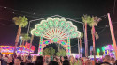
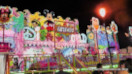
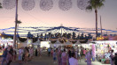

Feria de Manilva
, Manilva, Málaga 29691



En Agosto se celebra la Feria Grande, que da comienzo con los desfiles de carrozas y pasacalles donde el confeti y las serpentinas cobran protagonismo por las calles del municipio. Más tarde, la fiesta se traslada a un moderno recinto donde los más pequeños disfrutan de las atracciones y los mayores, de una copa de vino acompañado por un rato con los amigos en las diferentes casetas.El primer acto es el tradicional encendido del recinto ferial donde las autoridades municipales acuden para dar por inaugurada la fiesta y proceder al nombramiento de las Damas y Reinas de las fiestas, donde las muchachas y mujeres manilveñas más guapas lucen sus mejores galas llenas de alegria e ilusión.
Entrada gratuita
Opening Times
Dates: 9 August 2026 - 14 August 2026 *
*The dates provided are approximate and based on experience from previous years. We will inform you of the final dates shortly so that you can plan accordingly.
Amenities
- Target audiences
- For Families
- Young People
- Seniors
- Couples
- Solo travel
- Segments
- Leisure and fun
- Frequency
- Yearly
Location
Related Products
Explore related businesses to make the most of your Andalucia experience.